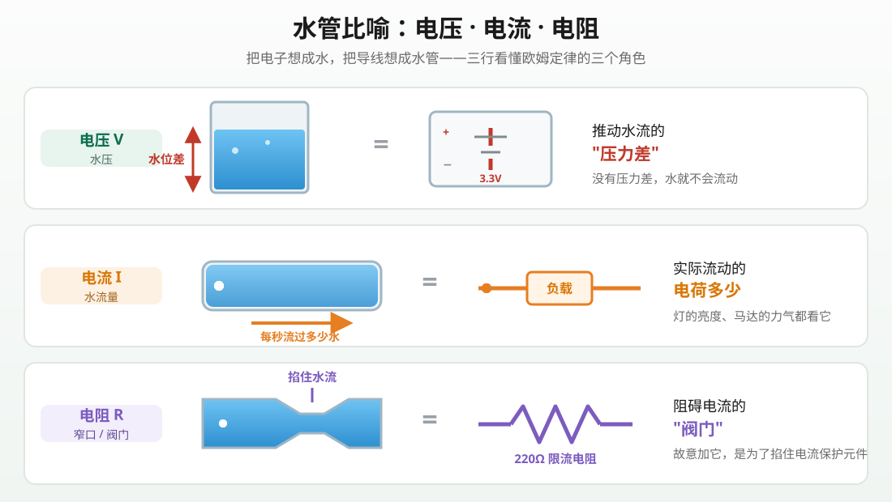

阶段一 · 破冰与建立信心 ｜ 难度：★☆☆☆☆ ｜ 预计用时：30–45 分钟（其中环境安装约 20 分钟，写代码只要 15 分钟）
本课材料：ESP32 开发板 ×1、带数据传输功能的 USB 线 ×1（就这么点东西） 无硬件替代：文末附 Wokwi 在线模拟器方案，只有浏览器也能学完本课

你将做出：板子上一颗蓝色小灯，以 1 秒亮、1 秒灭的节奏稳定闪烁，同时电脑屏幕上同步打印出
LED ON/LED OFF。
这就是嵌入式世界的 "Hello World"。全世界每一个嵌入式工程师的职业生涯，都是从让一颗灯闪起来开始的。区别只在于——学完这 15 课，你的灯会连上 Wi-Fi、听懂手机指令、在撞到墙之前自己刹车。
本课学习目标（完成后你将拥有）：
很多人第一课就把板子烧了。记住这三条，第 6 课我们再展开讲原理：
| # | 原则 | 一句话解释 |
|---|---|---|
| 1 | ESP32 只认 3.3V，别碰 5V | 它的引脚不是 5V 耐压的，接上 5V 信号（比如 Arduino 的 5V 引脚、5V 传感器）可能直接烧毁芯片 |
| 2 | 先断电接线，再通电 | 插着 USB 拔插杜邦线，容易短路打火花 |
| 3 | 不确定的引脚，先查表再接 | ESP32 有一批"特殊脾气"的引脚（有的开机时不能拉高、有的只能输入不能输出），第 6 课专门清算，现在先按本课和教程里的接线表来 |
💡 为什么要现在讲？ 因为"安全"必须螺旋式渗透——第 1 课给你够用的三原则，第 6 课给你完整的引脚陷阱清单。等你到第 6 课时回头看，会发现这些坑早就被提前拆掉了。
不要跳过这一节。后面所有课程（马达驱动、传感器、电源管理）都建立在这 5 分钟的地基上。
电流像水一样，必须有去有回才能流动。让灯亮起来，只需要完成一个最简单的循环：
电源正极 ──→ 用电器（灯）──→ 电源负极
↑ │
└──────── 形成闭环 ─────────┘
断开任何一环，电流立刻归零——这就是"断路"；两根线直接碰在一起不经过用电器，电流暴增——这就是"短路"（会烧线、烧电源，接线三原则防的就是它）。
把电子想成水，把导线想成水管：

| 概念 | 水管比喻 | 符号 / 单位 | 白话解释 |
|---|---|---|---|
| 电压 Voltage | 水压 | V（伏特） | 推动水流的"压力差"。没有电压差，就没有电流 |
| 电流 Current | 水流量 | A（安培） | 实际流动的电荷多少。灯的亮度、马达的力气都看它 |
| 电阻 Resistance | 水管里的窄口/阀门 | R（Ω 欧姆） | 阻碍电流的元件。故意加电阻是为了限制电流 |
它们的关系就是大名鼎鼎的欧姆定律：
电压 V
电流 I = ───────
电阻 R
📌 两个直接能用的结论（第 2 课马上验证）：
- 电压不变时，电阻越大 → 电流越小。所以串联电阻可以"掐住"电流，保护元件。
- 电流过大 = 发热 = 烧毁。LED 和芯片引脚都有最大电流上限，超了就报废。
注：这里的 V 指加在电阻两端的电压（若与吃掉约 2V 的红光 LED 串在 3.3V 下，电阻分得约 1.3V，220Ω 时电流约 5.9mA）。试试把电阻拉到最小（10Ω）：电流破百毫安，LED 和引脚瞬间烧毁——第 2 课你将亲手算出正确阻值。
现在你能看懂第 1 课的电路了——板载 LED 的回路早就由厂家替你闭合好了：
3.3V 电源 ──→ 芯片内部开关（GPIO2 输出 HIGH 时闭合）
│
▼
GPIO2 ──→ 板载限流电阻 ──→ 板载 LED ──→ GND
▲
│
代码 digitalWrite(LED_PIN, HIGH) 就是在"闭合这个开关"
HIGH → 开关闭合 → 回路导通 → 电流流过 → 灯亮 🟢LOW → 开关断开 → 回路断路 → 电流归零 → 灯灭 ⚫
切换按钮，观察：开关闭合 → 电流流动（金色圆点）→ LED 发光。代码改变的只是开关状态，亮灯的是物理回路。
"代码变成物理动作"的物理真相：代码改变的是芯片内部一个开关的状态，从而接通或断开一个物理回路。 这一课的所有其他知识，都是这个模型的放大版。
⚠️ 为什么板上必须有那颗电阻？ LED 是"电压钳位型"元件，导通后两端电压几乎不变。若直接接 3.3V，回路电阻趋近于 0，由欧姆定律可知电流会冲到极大值——几秒钟 LED 就烧了。那颗电阻把电流限制在 10~20mA 的安全区。第 2 课你在外接 LED 时，必须自己补上这一课：忘串电阻 = 烧 LED（这是新手烧毁率第一的错误）。
本课以最常见的 ESP32-WROOM-32 DevKit（30 针或 38 针） 为例。它是这样的：
┌─────────────────────────────┐
│ [USB 口] │
│ │
│ (EN) (BOOT) │ ← 两个按钮
│ │
│ 3V3 GND GND 3V3 │ ← 电源区
│ IO36 IO39 IO34 IO35 │
│ IO32 IO33 IO25 IO26 IO27 │ ← GPIO 区（左边一列）
│ IO14 IO12 IO13 GND IO15 │
│ IO2 IO0 IO4 IO16 IO17 │ ← ⭐ IO2 上通常印着 "LED"
│ IO5 IO18 IO19 NC IO21 │
│ RXD TXD IO22 IO23 │
│ GND IO21 RXD TXD │ ← 右边一列
│ │
│ [ ESP32 芯片模块 ] │
└─────────────────────────────┘
⚠️ 不同厂家的板子布局略有差异，一切以你板子上的丝印（印在板子上的小字）为准。找不到对应丝印时，把板子拍张照，对照随机教程的引脚图确认。
第 1 课只需要认识 IO2（板载 LED）、GND、3V3 三个引脚。橙色脚是"启动时被采样"的 strapping 脚——第 6 课会专门清算它们的脾气。
| 丝印 | 全称 | 白话解释 |
|---|---|---|
| GPIO | General Purpose Input/Output，通用输入输出引脚 | 芯片与外界沟通的"手指"：输出时它能对外供电（3.3V）或断电（0V），输入时它能读出外面接的是高电平还是低电平。你可以把它理解成一根能"按下去"也能"读出来"的电线触点 |
| 3V3 | 3.3V 电源输出 | 板载稳压器输出的 3.3V 电源，给传感器供电用（注意：它只能带小负载，带不动马达） |
| GND | Ground，接地 | 电路的"零电位参考点"，所有信号都要有 GND 才能形成回路。记住：共地是一切通讯的前提（第 5 课会深刻体会） |
大多数 ESP32 DevKit 把板载 LED 接在 GPIO2（丝印常标 LED 或 L）。如果你的板子标在别的引脚上，把代码里的 2 改成对应数字即可——这正是"代码如何变成物理动作"的第一课：代码里的数字，对应板子上的物理引脚。
另外认识两个按钮：
我们用 Arduino IDE——对小白最友好的选择。它的代码风格是整个教程的基础，后面所有课程的代码都能在它里面直接编译烧录。
（进阶读者问：PlatformIO 和 ESP-IDF 呢？——PlatformIO 在第 12 课之后的进阶篇介绍，官方工业级框架 ESP-IDF 是第 14 课的主角。先别贪多。）
第 1 步：下载安装 Arduino IDE 2.x
前往官网 https://www.arduino.cc/en/software，下载对应系统版本并安装。
第 2 步：安装 ESP32 板支持包
https://espressif.github.io/arduino-esp32/package_esp32_index.json
esp32 → 找到 esp32 by Espressif Systems → 点安装（首次会下载较久，耐心等进度条走完）第 3 步：安装 USB 转串口驱动
用 USB 线把板子连上电脑，打开设备管理器（Windows）查看：
第 4 步：选择板子和端口
🆘 卡住了？直接看文末【常见报错诊断】，你大概率遇到的问题别人都踩过。
还没买板子？两分钟准备好"虚拟 ESP32"：
LED 和 Resistor（220Ω）GPIO2 → 电阻 → LED 正极(长脚/A)，LED 负极(C/短脚) → GND本课正式发布时，每课都会附上一键打开的 Wokwi 项目链接，点开即跑。
// ============================================
// 第 1 课：Hello ESP32 —— 点亮并闪烁板载 LED
// ============================================
const int LED_PIN = 2; // 板载 LED 接在 GPIO2（以你板子丝印为准）
void setup() {
pinMode(LED_PIN, OUTPUT); // 把 GPIO2 配置成"输出"模式
Serial.begin(115200); // 打开串口，通信速率 115200
}
void loop() {
digitalWrite(LED_PIN, HIGH); // 让 GPIO2 输出 3.3V → 灯亮
Serial.println("LED ON"); // 通过串口向电脑发送一行字
delay(1000); // 原地等待 1000 毫秒（1 秒）
digitalWrite(LED_PIN, LOW); // 让 GPIO2 输出 0V → 灯灭
Serial.println("LED OFF");
delay(1000);
}
const int LED_PIN = 2;
定义一个常量，给引脚起名字。为什么不用魔法数字 2 散落各处？因为如果哪天 LED 换了引脚，你只需要改这一行。这是从第一课就该养成的工程习惯。
void setup() { ... }
程序上电或复位后只执行一次，用来做初始化——告诉芯片"哪个脚我要当输出用""串口给我打开"。
void loop() { ... }
初始化完成后无限重复执行里的内容。嵌入式程序没有 main 函数的"跑完就退出"——设备要永远工作下去，所以逻辑都放在 loop 里打转。
pinMode(LED_PIN, OUTPUT)
把引脚配置成输出方向。方向必须先声明：你可以把引脚想象成水管，OUTPUT 是"我往外供水"，INPUT 是"我只读外面的水压"。不声明方向就用，行为是未定义的。
digitalWrite(LED_PIN, HIGH) / LOW
输出高电平（约 3.3V）或低电平（0V）。数字信号只有 0 和 1 两档——为什么不能输出 1.5V 让灯半亮？第 3 课的 PWM 会给你答案。
delay(1000)
阻塞式等待 1000 毫秒。注意：等待期间芯片什么都干不了，串口打印、按钮检测全部暂停。你现在感觉不到问题，但第 10 课你会亲眼看到它把蓝牙搞断线——届时我们用 millis() 彻底告别它。
波形就是 GPIO2 上真实的电压：高电平灯亮、低电平灯灭。注意：程序执行到 delay() 时会原地罚站——这段时间里 ESP32 什么都干不了。第 3 课我们把 delay 扔掉，第 10 课你会明白为什么。
Serial.begin(115200) / Serial.println(...)
打开串口（速率 115200 波特），并向电脑发送字符串。这是你与芯片对话的第一条电话线：没有屏幕的芯片，全靠串口"说话"。嵌入式开发 80% 的调试都靠它。
Failed to connect：按住板子上的 BOOT 键 1–2 秒再松开，通常立刻恢复——这是新手最高频问题，不是你操作错了代码里已经写好了串口打印，现在打开"电话线"的另一头：
115200（必须与代码里 Serial.begin(115200) 一致）LED ON
LED OFF
LED ON
LED OFF
🔑 核心心智模型建立：
代码里的数字 2→芯片的物理引脚 GPIO2→板上的 LED 亮灭→串口打印同步输出。这就是"代码如何变成物理动作"的完整链路。后面 14 课，只是在这条链路的两端不断加东西而已。
LED ON / LED OFF，无乱码HIGH/LOW 分别对应回路的什么状态全部打勾 → 你已经完成了嵌入式界的 Hello World，进入第 2 课。
delay(1000) 改成 delay(200)，让灯快闪。改回 1000 前，思考：为什么改 loop 里的数字就能改变物理世界？Serial.println("LED ON") 后面再加一行，打印你的名字。LED_PIN 改成 34，上传看看灯还亮不亮——先别问为什么，把现象记下来，第 6 课揭晓答案。I = V/R 算算该串多大电阻？（提示：电阻要分掉 3.3V − 2V = 1.3V，得 130Ω；手边没有 130Ω？第 2 课告诉你标准答案。）| 现象 / 报错关键词 | 原因 | 解决办法 |
|---|---|---|
| 端口列表是空的，找不到 COM 口 | ① 缺驱动 ② 线是充电线 | 装 CH340/CP2102 驱动；换一根确认能传数据的 USB 线（换线解决 80% 的问题） |
Failed to connect to ESP32 / Timeout waiting for packet header |
自动下载电路没触发 | 按住 BOOT 键再点上传，连接成功后松开；或按一下 EN 重试 |
Brownout detector was triggered |
供电电压不稳（电脑 USB 口功率不足 / 线太细太长） | 换机箱后面板的 USB 口、换短线；别用键盘 HUB 或劣质充电头 |
| 上传成功但灯完全不亮 | ① LED 引脚不是 2 ② 板子型号选错 | 查板上 LED 丝印改 LED_PIN；工具栏确认选的是 ESP32 Dev Module |
串口打印全是乱码 ??? 或 ¡¡¡ |
波特率不匹配 | 监视器右下角改成 115200（与代码一致） |
LED_BUILTIN was not declared |
部分 ESP32 核心未定义该宏 | 别用 LED_BUILTIN，直接写数字（本课代码已如此） |
编译报 no such file 或板包下载失败 |
网络问题导致板包不完整 | 重开 Boards Manager，卸载后重装 esp32 板包；必要时挂代理 |
| 上传时提示端口被占用 | 串口监视器或其他软件占着 COM 口 | 关闭串口监视器、其他串口助手（如串口调试工具、旧的 IDE 窗口）再上传 |
灯只能闪，还不够"智能"。第 2 课：数字信号与基本电路——接一颗外置 LED 和一个实体按钮，实现"按一下开灯、再按一下关灯"。你会第一次接触输入（读按钮）、第一次动手搭真实电路（面包板 + 亲手实践本课学的限流电阻），并提前埋下一个大坑的引子：按键抖动。
本课程系列：从点亮一盏灯，到设计一台会自己思考的机器。